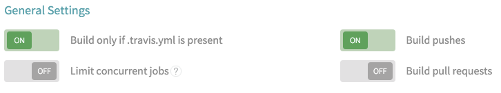

Deploy your blog to github pages automatically using Hugo and Travis
The Slashdot effect occurs when a small site gets more traffic than it can handle from a popular website. When this happens the website slows down or start responding with Service Unavailable errors, just like if it was under a Denial of service attack.
Sometimes a site can be built in a way that it doesn’t require content to be dynamically generated for the user. These are called static sites. Since static sites don’t need to generate the html response each time the site is showed to the user they can handle a much larger amount of requests per second than their dynamic counterpart.
A blog usually fits the static site description perfectly. Just having a bunch of html, css and javascript files is an elegant and simple solution. But you may ask, won’t be handling the content a mess? It won’t, I promise!
Enter static site generators
A static site generator is a tool that renders content into html, css and javascript. The content is usually written in markdown and contains some metadata like dates, title or categories. The workflow to make a new post is quite simple, just throw in a new markdown file in the right place, rebuild your site, and deploy it to your server.
Hugo as our static blog generator
After trying out some static site generators for this blog I ended up with Hugo. Hugo is a really fast static site generator written in golang, and it’s also a quite simple tool to get started with.
If you use brew type brew install hugo to install it.
Making our first blog with Hugo
Ok, let’s make a blog from scratch to get you introduced. First we need to tell Hugo to generate the blog skeleton. We can do that with the following command:
$ hugo new site myblog
$ cd myblog
$ tree
.
├── archetypes
├── config.toml
├── content
├── data
├── layouts
└── static
5 directories, 1 file
We also need a theme. Hugo has already some nice themes and they are pretty easy to customize. You have a list of themes and demos for most of them here.
To install the theme clone its repository into the themes folder. For this article we are going to use the theme heather-hugo.
$ git clone https://github.com/hbpasti/heather-hugo themes/heather-hugo
Cloning into 'themes/heather-hugo'...
remote: Counting objects: 323, done.
remote: Total 323 (delta 0), reused 0 (delta 0), pack-reused 323
Receiving objects: 100% (323/323), 602.51 KiB | 56.00 KiB/s, done.
Resolving deltas: 100% (113/113), done.
Checking connectivity... done.
$ echo "theme = \"heather-hugo\"" >> config.toml
That’s it, we’ve made a blog!
Writing our first post
Now it’s time to write our first post. Hugo offers a bunch of commands to generate skeletons. You can also have your own archetypes. Type the following command to generate a post:
$ hugo new post/my-first-post.md
/Users/rcoedo/myblog/content/post/my-first-post.md created
$ tree
.
├── archetypes
├── config.toml
├── content
│ └── post
│ └── my-first-post.md
├── data
├── layouts
└── static
6 directories, 2 files
As you can see posts are kept under ./content/post/. All our content is organized this way so it’s easy to manage.
A post contains two well defined sections: a header and a body. The body is the markdown used to generate the html. The header contains metadata about the post itself, like the date for the post, the draft status or the title.
Now edit the post we’ve created and add some markdown text to it. Then compile our blog and the site will be generated under
the public/ directory.
$ cat content/post/my-first-post.md
+++
date = "2015-12-05T11:14:46Z"
draft = true
title = "my first post"
+++
## Markdown is awesome
Indeed!
$ hugo --buildDrafts
0 draft content
0 future content
2 pages created
8 paginator pages created
4 tags created
2 categories created
in 26 ms
$ tree public/
public/
├── 404.html
├── apple-touch-icon.png
├── favicon.png
├── index.html
├── index.xml
├── post
│ ├── index.html
│ ├── index.xml
│ └── my-first-post
│ └── index.html
├── sitemap.xml
└── style.css
2 directories, 10 files
Note that we’ve passed the option --buildDrafts to tell hugo to generate pages for our drafts too, otherwise drafts will be ignored.
Hugo also comes with a server capable of live reloading your browser and a watcher for your files. Every time you save a file
Hugo will recompile the changes and reload your browser. All this process is very fast so you will get almost instant feedback.
To run the server execute, run hugo server --watch --buildDrafts.
Now open localhost:1313 on your browser and make some changes to my-first-post.md.
You’ll see how Hugo compiles the changes and reloads your browser. Cool, isn’t it?
Overriding theme defaults
We used the heather-hugo theme for our blog, but we probably want to add our own touch to the site. We can easily override any static file defined
in our theme by placing a copy inside our site’s root.
Let’s make some changes to the theme’s style. First run cp themes/heather-hugo/static/style.css static/ to copy our theme’s style.css into our static directory.
Then open static/style.css with your editor and make some changes. If you still have the Hugo server running your browser will reload and you’ll be able
to see the changes you’ve made.
Just like this you can override any other parts of the theme. Awesome!
Deploying the blog to github pages
We’ve made a very simple blog. Now we’ll publish the generated content as a github page.
Github pages follow a simple naming convention. When github finds a repository named <username>.github.io for a user accout, it serves the master’s
branch content to be accessed as <username>.github.io.
First create a repository in your github accout following the naming convention. For my username my repository is
rcoedo.github.io. Clone that repository and then add the content inside public/
to the repository, make a commit and push it.
# These commands are only orientative, is not the purpose of this article
# to teach git basics, so I didn't test all this.
$ git clone git@github.com:<username>/<username>.github.io.git
$ cp -r public/* <username>.github.io/
$ cd <username>.github.io
$ git add --all
$ git commit -m'First commit'
$ git push
You’ll be able to find your new blog in <username>.github.io.
This is good to understand how github pages work but it’s not enough to maintain our blog. We don’t have the sources under version control, only the compiled website.
To manage my sources I keep a separate branch called source for the Hugo website and copy the generated contents from that branch to master when I want
to deploy a new version. This way I keep both the source and the generated site in sync and versioned.
# These commands are only orientative, is not the purpose of this article
# to teach git basics, so I didn't test all this.
$ cd <username>.github.io
$ git checkout -b source
$ rm -rf * # Be careful!
$ cp -r ~/myblog/* .
$ git add --all
$ git commit -m'First source commit'
$ git push --set-upstream origin source
Yay! now we have both our source and our site versioned!
Automatic deployment with travis
What we have is pretty good, but deploying the static site is a hell. We can do better.
We will use travis to automate the whole process of generating the static site and
moving it to the master branch. It will be triggered whenever we push changes to the source branch.
First of all if you don’t already have a travis-ci account, register one. Add your <username>.github.io repository
to it and go to general settings. Then, turn on the “Build only if .travis.yml is present” option. I recommend the following settings

Now we need to create a .travis.yml file on our source branch and give travis permission to push to our repository.
Follow this guide to generate a new ssh key. You should have two files now: id_rsa and id_rsa.pub. One
is your private key and the other one is your public key. I suggest you rename them to travis_key and travis_key.pub.
Install the travis helper gem with gem install travis (you need to have ruby installed) and run the following commands inside the repository:
$ git checkout source
$ touch .travis.yml # Creates the travis config file in the source branch
$ travis encrypt-file travis_key --add
After this, you will have an initialized .travis.yml file and the necessary configuration to use the key. Move your travis_key and your travis_key.pub to
somewhere safe and add the new encrypted file to git. Copy the contents of the public key travis_key.pub and add it to your repository as a deploy key.
You can find this option under the deploy key menu in the repository settings.
After finishing this step Travis will have permission to push to your master branch and will be triggered whenever something is pushed to source, but we still need to tell it how
to build your site. I suggest you check my .travis.yml
config file and adapt it to yours. Also check my deploy script here
(This script is based on someone’s else script but unfortunately I don’t remember where I saw it. If you think it’s yours I’ll be glad to add a reference to it)
Set these up, add a new post to your source branch, push it and check everything is working!
I hope you had fun with this article. If you have any questions, thoughts or feedback please contact me on twitter.